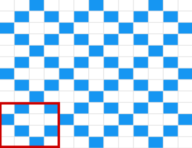
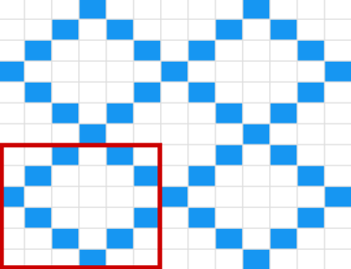
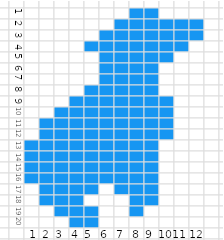

Testausneule pelastaa ahkerat testaajat pakkasenpuremilta. Ohje sisältää kuviomallin, käytä pelkkää ristikkokuviota tai neulo pinta täyteen testauskoiria, vain luovuus on rajana. Neulo testausteema sukkiin, lapasiin, pipoon, kaulaliinaan, villapaitaan.. ihan mihin vaan!
  
Lataa ohje [PDF]
Löytyy myös Ravelrystä
Lyhyesti, yllättävän paljon.
Neuleohjeita voi ajatella ohjelmointikielenä. Ne koostuvat sovituista termeistä, jotka antavat toimintaohjeita suorittajalle, tässä tapauksessa neulojalle. Esimerkiksi tämän ohjeen pohjakuvion voisi kirjoittaa muotoon:
A=sininen
B=turkoosi
1. *A 2o, B 1o, A 1o*
2. *A 1o, B 1o*
3. *B 1o, A 3o*
4. toista rivi 2.
5. jatka 1.-4. kunnes sopiva
Neulominen myös tutkitusti parantaa keskittymistä ja oppimista, joten neulojat ovat erityisen hyvin varustautuneita oppimaan uusia (ohjelmointi)kieliä. Neuleilla on historiaa myös erilaisten koodien kanssa, "naisten harrasteena" pidetty neulominen ei herättänyt huomiota maailmansotien myllerryksessä ja naisvakoojat pystyivät viestimään käsitöidensä kautta. Pehmeät materiaalit voi olla myös kovaa tiedettä, langan ja neulepinnan geometristen ominaisuuksien selvittäminen auttaa ymmärtämään erilaisten sidosten toimintaa mekaniikassa ja lääketieteessä.
Linkkejä:
Why our brains love arts and crafts [pdf]
How knitting is like coding
Knitting and programming
How knitters are human computers
Here’s How Knitting Was Used As A Tool To Spy On Enemies During Wartime
The Wartime Spies Who Used Knitting as an Espionage Tool
How one physicist is unraveling the mathematics of knitting
Geometry of Materials - Knitting in the news